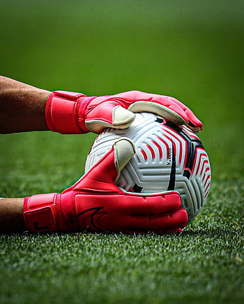
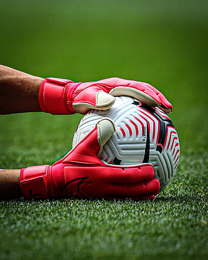
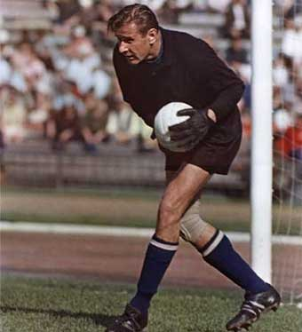
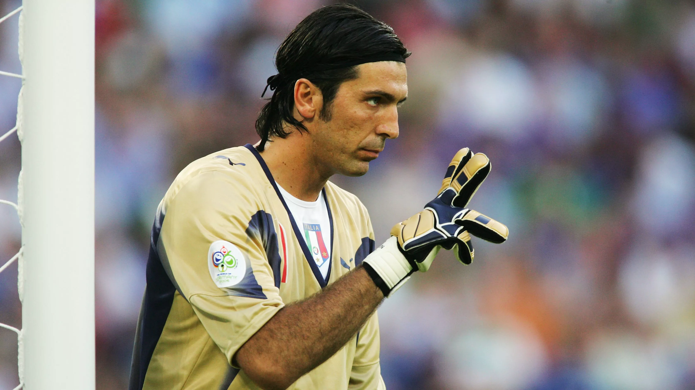
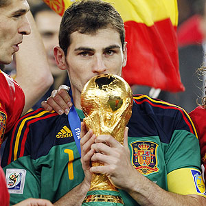
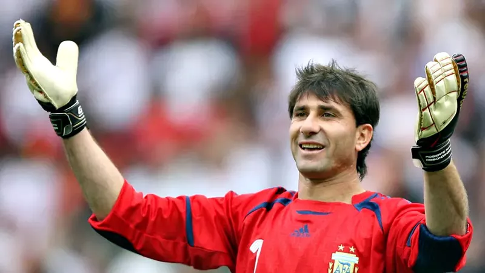
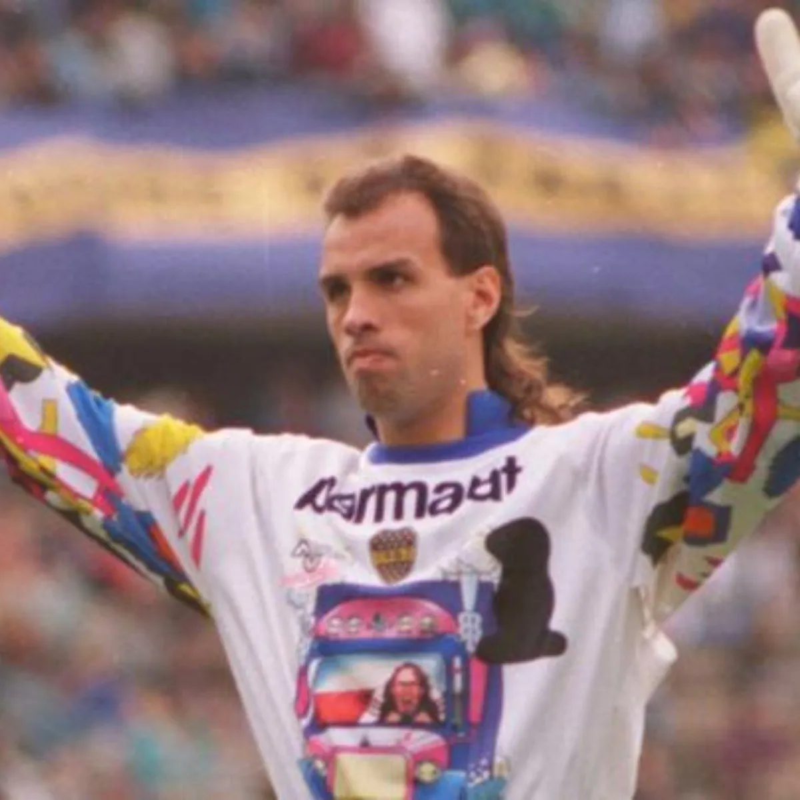
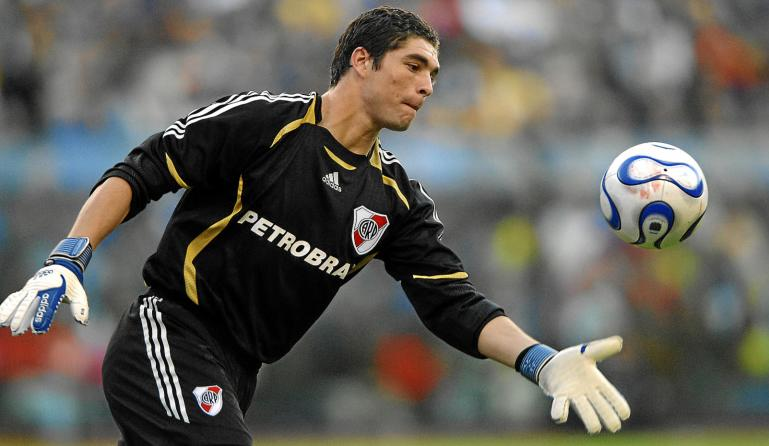

Sitio Web sobre futbol
Bienvenido a The GoatKeeper
Una web de fútbol que va mucho más allá del mundo del arquero. En nuestro sitio encontrarás numerosos contenidos relacionados con las novedades del mundo del material deportivo.
Bienvenido a The GoatKeeper
Una web de fútbol que va mucho más allá del mundo del arquero. En nuestro sitio encontrarás numerosos contenidos relacionados con las novedades del mundo del material deportivo.
Moscú, 1929 - 1990. Inició su vida deportiva jugando al hockey sobre hielo como portero cuando trabajaba como mecánico en una fábrica de aviones. En 1949 entró a formar parte del club de fútbol Dinamo de Moscú, también como portero, y en 1953 empezó a ser conocido mundialmente.
Futbolista ruso. Conocido internacionalmente como la Araña Negra, está considerado uno de los mejores porteros de la historia del fútbol; de una gran envergadura, era muy ágil y seguro bajo los palos.
Carrara, Italia, 1978. Inició su carrera deportiva en el Parma Calcio, al que ingresó a los 13 años, debutando profesionalmente con el primer equipo en 1995.
Con la selección de fútbol de Italia participó en cuatro Eurocopas y en cinco ediciones de la Copa Mundial de Fútbol, siendo su mejor resultado el campeonato obtenido en el Mundial de 2006 luego de superar por 5-3 en tanda de penaltis a la selección de Francia en la final.
Móstoles, Madrid, 20 de mayo de 1981. Iker Casillas se formó íntegramente a nivel futbolístico, en las categorías inferiores de Real Madrid, en cuyo equipo prebenjamín comenzó a jugar en la temporada 1990/91.
Capitaneó a su selección nacional, al proclamarse campeona continental en 2008 y 2012 y campeona del mundo en 2010, logrando así el primer «triplete» de selecciones nacionales.
Bouquet, provincia de Santa Fe, 19 de agosto de 1972. Destacaba por sus grandes reflejos, presencia y por su habilidad para detener tiros desde el punto del penal. Es considerado el 8° mejor portero de la primera década del siglo xxi por la IFFHS.
Finalizó su carrera con múltiples logros colectivos e individuales, donde destacan 4 Copas Libertadores, 2 Copas Sudamericanas, 2 Copa Intercontinental y una gran cantidad de torneos locales de la Primera División argentina.
Medellín, Antioquia; 26 de febrero de 1966. Poseedor de una gran trayectoria, se dedicó al fútbol por 25 años, teniendo una de las carreras más extensas de la historia del fútbol argentino.
En septiembre de 2020 se hizo cargo del Club Deportivo Guadalajara de la Tercera División de España, pero fue destituido el 20 de noviembre tras sólo cinco jornadas de liga.
Empalme Villa Constitución, 6 de mayo de 1984. Jugó sus inferiores en Sociedad Italiana, tras dejar la liga dicho club paso al Club Academia Ernesto Duchini. Viajó a varios partidos del sub-15 y sub-17 argentino como jugador de Duchini tras ser recomendado por el Pato Fillol.
Salió campeón del Torneo Clausura 2008 con River Plate, adjudicándose la portería menos vencida del torneo, con 11 goles en 19 partidos. Sin dudas fue la cerradura del arco del equipo de Diego Simeone, y la garantía de varios triunfos que encadenó el millonario ese año, pese a una defensa muy cuestionada, con jugadores fuertemente criticados por la hinchada, como Gustavo Cabral y Nicolás Sánchez.